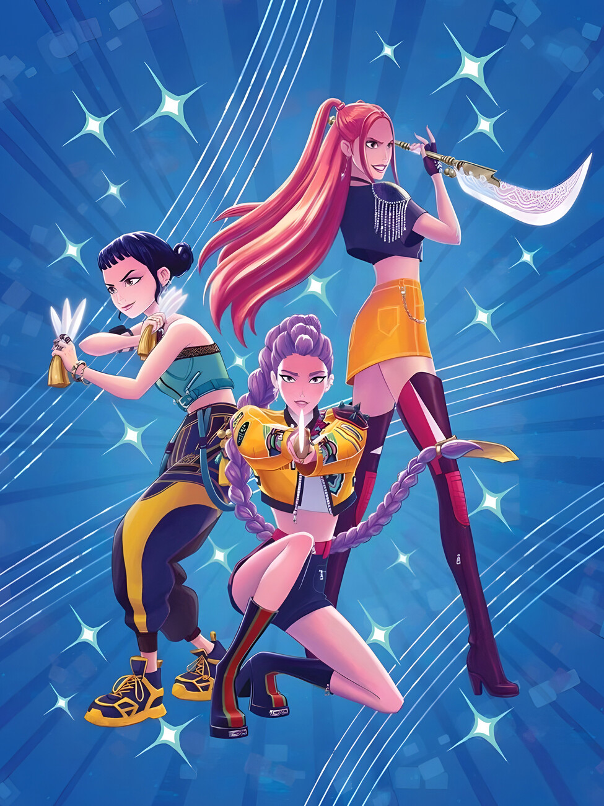
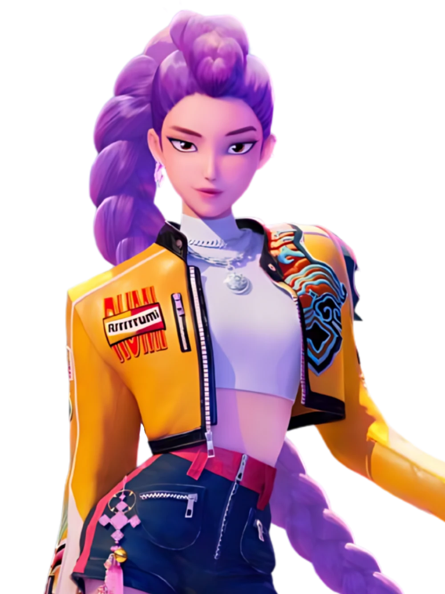
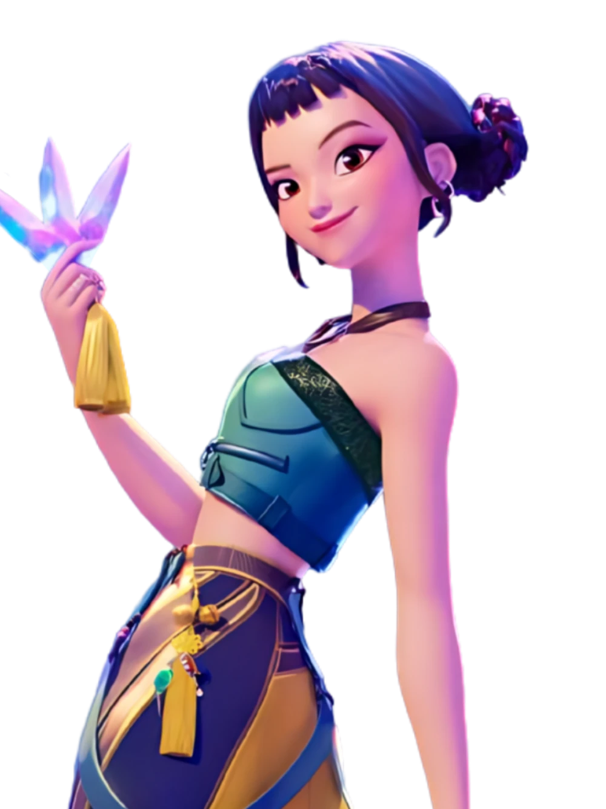
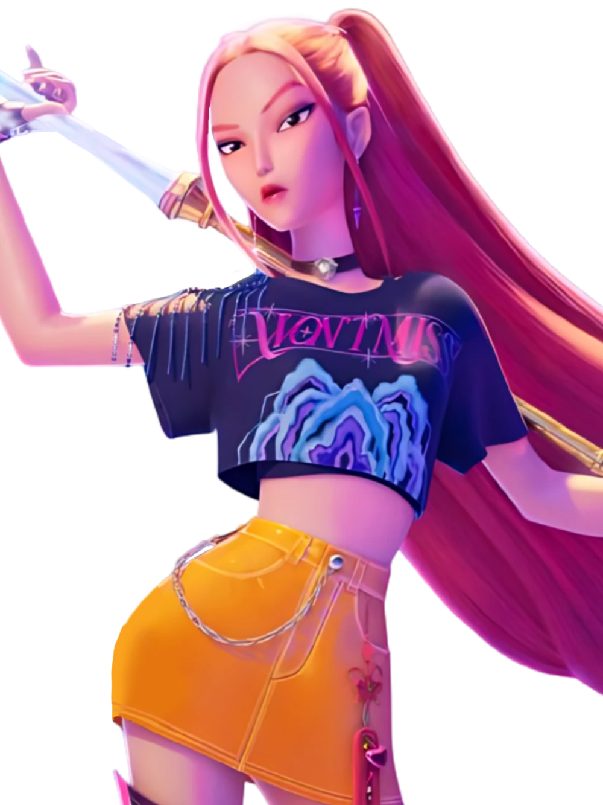

HUNTR/X (Korean: 헌트릭스 RR: Heonteurikseu) are the main protagonists of the film KPop Demon Hunters. They are a three-member girl group comprising of Rumi, Mira, and Zoey. While publicly recognized as K-pop idols, they secretly operate as demon hunters. They use their music to reinforce the Honmoon and prevent demons from breaching the barrier to steal human souls. As idols, the group is involved in all aspects of their creative process, from songwriting and composition to choreography. Production is a team effort, with Rumi serving as the leader who oversees the process, Mira taking charge of dance and choreography, and Zoey focusing on lyric writing. Bobby is the group's manager, responsible for the members' additonal schedules and activities. HUNTR/X are the trio of demon hunters succeeding the Sunlight Sisters. Following the death of their member Mi-yeong Ryu, her daughter, Rumi, was taken in and raised by Mi-yeong’s former teammate, Celine. Determined to continue the group’s legacy, Celine trained Rumi with the goal of forming the next generation of demon hunters around her. When Rumi reached her late teens, Celine recruited two other talented singers, Mira and Zoey, to form HUNTR/X. The group officially debuted 5 years prior to the events of the film.

Rumi is the daughter of the late Mi-yeong Ryu, a former demon hunter, and a demon father. She was raised by Celine, a member of the Sunlight Sisters, who taught her during childhood to hide her demonic heritage and that by fulfilling her purpose of sealing the Golden Honmoon, her patterns would disappear. Throughout the film, Rumi struggles with her dual heritage, concealing her markings and fearing rejection from both her team members and her fanbase. Rumi is the leader of HUNTR/X, responsible for overseeing the production process and ensuring the group's success. She is a talented singer and performer, but her demonic heritage causes her to feel like an outsider within the group. Rumi's internal conflict is a central theme in the film, as she grapples with her identity and the fear of being rejected by those around her. Despite these challenges, Rumi remains dedicated to her role as a demon hunter and strives to protect humanity from the threats posed by demons. Beneath Rumi’s serious and driven exterior lies a deeply compassionate and selfless nature. She genuinely values her friends, fans, and loved ones. Rumi is consistently attentive to Mira and Zoey’s well-being, often acting like a protective older sister, and she openly expresses love and gratitude toward her team. Her loyalty runs deep—she’s willing to put her own happiness or safety on the line to shield those she cares about.

Zoey is perky, bubbly, energetic and tactile, showing her love for her friends and fans whenever she can. She can also be very naive, believing that Healer Han's tonics could help one’s voice get better. She also couldn’t pick up on Rumi’s changing behavior, unlike Mira, accepting the fairly large amount of unreasonable changes that "Takedown" went through. She is lovable to be around and is easy to get along with, having a likable, cute personality. Zoey is shown to be very prone to distraction, unable to resist the Saja Boys' song, "Soda Pop," twice, and she ends up moving her shoulders up and down while it plays. This also shows a bit of her optimism and open mindedness, too, initially wondering if the Saja Boys could be "nice demons" during their debut. Zoey also easily fell for the Saja Boys, particularly Mystery, shown to quickly get nervous when he sat next to her during the fan event, keeping a picture of him on her bedroom wall, and shown smiling when Mystery sings a part during "Your Idol". Zoey was born in South Korea but raised in Burbank, California, USA. She made songs and lyrics in many of her notebooks at school before joining HUNTR/X, which received negative reactions from people. Despite the comments from her old school, she still became a rapper in the future, thanks to Celine recruiting her as the rapper in HUNTR/X. Fans speculate that Zoey has divorced parents due to her lyrics in the song "Golden" where it shows that she has to choose between living in Korea and the USA, and her "trying to play both sides".

Little is known about Mira’s past. Before joining HUNTR/X, Mira was regarded as the “black sheep” of her family from an early age. In the group’s single "Golden", one lyric reflects this, describing how she was often labeled a problematic child due to her wild, rebellious nature. It is implied that Mira distanced herself from her family, as her personality and actions clashed with the more formal expectations of her relatives. Mira is blunt, sarcastic, snarky, and brutally honest with a tough exterior. With her deadpan remarks, she has no problems with calling out Rumi for her choices, but she still cares deeply for both her and Zoey, especially since they let her be herself, unlike her family, whom she seems to have left behind. Mira also has a bit of a temper that’s shown briefly when the demons on their plane sabotage the group, and when she is shipped with both Romance and Abby. Although Mira seems to be more stoic, she’s shown to have almost as much enthusiasm and energy as her bandmates, and is never hesitant to act goofy with her friends, and can still develop crushes just as easily as Zoey can. She loves relaxing with her friends, looking forward to hearing about Zoey's interests.
